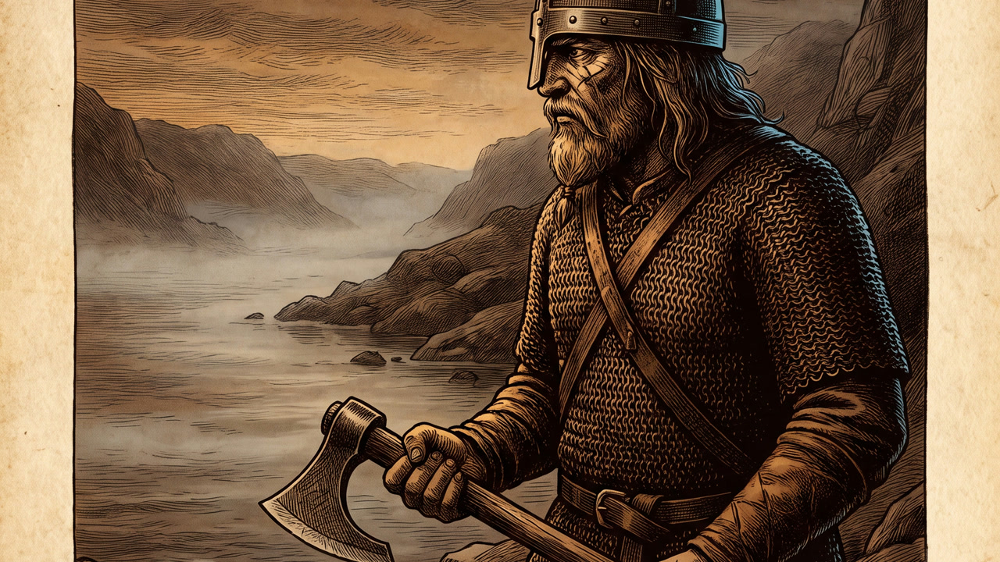
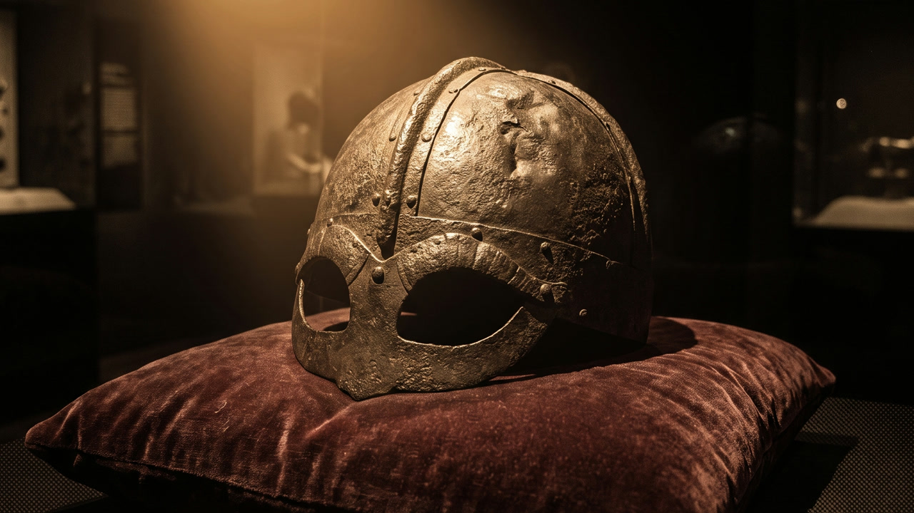
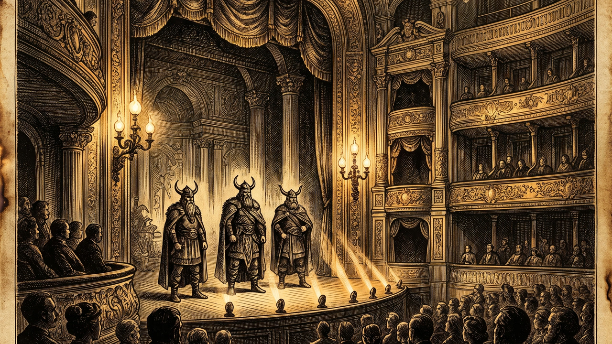

Regel: Max 2 accentfärger per bild. Resten är sepia/umbra.



| Kanal | Stil | Vad de saknar | Publik |
|---|---|---|---|
| OverSimplified | Stick figures, humor, vita bakgrunder | Inget visuellt allvar — känns barnigt för 30+ | 13–25 år |
| Simple History | Flat vector, begränsad palett | Generisk, tusentals kanaler ser likadana ut | Bred, skolelever |
| Historically | Mörka illustrationer, dramatiska stillbilder | Mer nutida digital look, saknar arkiv-känsla | 20–40 år |
| Echo & Truth | "Burnt Archive" — gravyr-estetik | Det oanvända mitten: konsthistorisk tyngd + AI-skalbarhet | 25–45 år, kvalitetsintresserade |